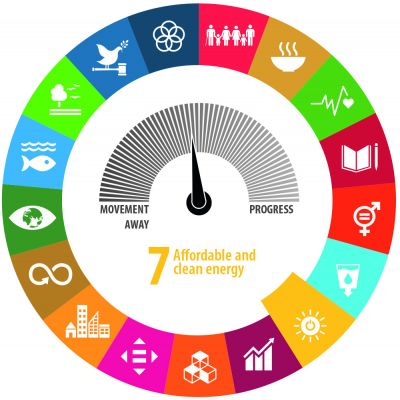

It is imperative for Sri Lanka to secure its energy supply by focusing on
renewable energy investments as Sri Lanka is a country that is constantly at risk of
climate change. In addition to environmental impacts, climate change will also affect tourism,
agriculture, society and health in the country. And energy have become key indicators.
As a developing country, Sri Lanka's demand for electricity will increase.
This is the main problem today. Although the country has a lot of renewable energy potential,
it should be used sparingly. The transition to renewable materials provides an opportunity to reduce
fuel imports that burden government finances, create jobs, including for women, and rebuild a clean and
sustainable energy-based economy. This transition will lead to multiple achievements for the economy,
the energy industry and the environment.

Activation of Energy migration
Health and economic impacts with the COVID-19 epidemic are a clear priority.
At the same time, with the recovery from the epidemic, governments had to re-establish their
immediate, medium and long-term goals for clean energy and formulate projects for new policies.
A broader policy and action framework is essential for the renewable and energy efficiency
movement to attract public as well as private sector participation. Eliminating regulatory
uncertainties, improving network capacity to allow for more renewable energy and facilitating
land acquisition are among the measures that will boost the confidence of private investors.
An Energy Energy Strategy can overcome these difficulties by increasing the potential for
renewable energy development to achieve economic, sectoral, environmental and social benefits
to Sri Lanka through greater co-ordination efforts and greater cooperation between both the public and private sectors.
The Asian Development Bank (ADB), Sri Lanka's largest multilateral development partner in the energy sector,
fully supports the transformation. The Bank continues to focus on,
Some recent interventions include the 30.5 MW Moragolla Hydroelectric Power Plant and related infrastructure; Systematic development of the 100 MW Mannar Wind Power Generation Project; Credit facility to install a solar roof capacity of about 60 MW; And Siyambalanduwa, Poonaryn and Mannar Phase 2 Development of future regenerative parks. These allow for clean energy development in addition to many ADB projects in the past.
In order to reduce the risk of climate change, Sri Lanka must transition to clean energy and develop a more sustainable and resilient future.
- increasing renewable energy use
- improving energy efficiency
- expanding the transmission and distribution system to absorb more renewable energy
- improving the reliability and quality of energy supply.
Some recent interventions include the 30.5 MW Moragolla Hydroelectric Power Plant and related infrastructure; Systematic development of the 100 MW Mannar Wind Power Generation Project; Credit facility to install a solar roof capacity of about 60 MW; And Siyambalanduwa, Poonaryn and Mannar Phase 2 Development of future regenerative parks. These allow for clean energy development in addition to many ADB projects in the past.
In order to reduce the risk of climate change, Sri Lanka must transition to clean energy and develop a more sustainable and resilient future.
Sustainable Development
Investment decisions on renewable energy need to be justified beyond the economic
benefits. Environmental and social well-being should be taken into consideration
while infrastructure development should be given priority. The transition to clean
energy is expected to help Sri Lanka achieve affordable electricity, enhance energy
security and achieve strategic priorities in fulfilling the nationally determined
contribution commitments under the Paris Agreement on the Environment and
Sustainable Development as expected in the country's National Energy Policy is done.
A Green Economic Future
The country's growing dependence on fossil fuel imports is due to rising energy demand and slow
progress on renewable energy projects. This situation is exacerbated by the impact of climate
change on hydropower generation and has become more precarious.
Thermal power (Petroleum and Coal) accounts for about 54% of Sri Lanka's primary energy supply
in 2017. As a result of the increasing share of fossil fuels in the generation mix, higher
generation costs are added to the country's fiscal year with end-user tariffs.
The country's energy mix is diversifying, reducing its dependence on fossil fuel imports due
to the transition to renewable materials. Facing the COVID-19 crisis effectively and
positively is an opportunity to restructure the economy through cleaner and more sustainable
investment that enhances economic productivity and contributes to local job creation.
The bulk of oil-fired heat generation is costly electricity and poses a threat to the country's
energy security. Diversification by switching to wind, solar and other renewable sources can
reduce the security threat. Meanwhile, the decline in renewable energy and storage technologies
presents opportunities for Sri Lanka to leapfrog from renewable energy
investments and take advantage of competitive clean energy technology.